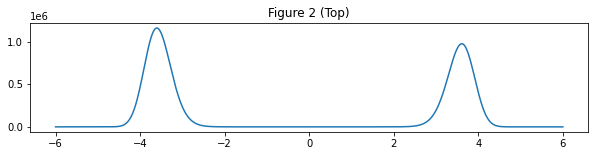

Experiment from paper
Contents
%matplotlib inline
import numpy as np
import torch
import scipy
import matplotlib.pyplot as plt
import tqdm.notebook as tqdm
from scipy.stats import levy_stable
from scipy.special import gamma as gamma_func
class Fractional_Langevin_MonteCarlo():
def __init__(self, m=None):
self.m = m
def phi(self, U):
# unnormalized target density : exp(-U(X))
return torch.exp(-U)
def drift_hat(self, x, alpha, U):
# simplified multidimensional drift
# approximate fractional derivative by using only the first term of centered difference operator
x.requires_grad_()
u = U(x)
grad = torch.autograd.grad(u, x)[0]
def c_alpha(alpha):
return gamma_func(alpha-1) / gamma_func(alpha/2)**2
return -c_alpha(alpha) * grad
def FLA(self, U, alpha, N, a_eta, b_eta, step_size, dim):
# Fractional Langevin Algorithm(FLA)
# when alpha = 2, FLA is same as ULA
burn_in = 5000
x_0 = torch.randn(1, dim).double()
Levy_motions = levy_stable.rvs(alpha, 0, size=dim * (N + burn_in))
Levy_motions = torch.from_numpy(Levy_motions.reshape((Levy_motions.shape[0] // dim, dim)))
x_i = x_0
samples = []
for i in tqdm.tqdm(range(N + burn_in)):
#step_size = (a_eta/(i+1))**b_eta
step_size = step_size
b = self.drift_hat(x_i, alpha, U)
x_i = x_i.detach() + step_size * b + step_size ** (1./alpha) * Levy_motions[i]
if dim > 1:
samples.append(x_i.detach().numpy())
else:
samples.append(x_i.detach().numpy().squeeze())
if dim > 1:
return np.concatenate(samples, 0)[burn_in:]
else:
return samples[burn_in:]
Experiment from paper#
FLMC = Fractional_Langevin_MonteCarlo()
# Section 4. Experiment with double-well potential
def double_well_potential(x):
u = (x+5)*(x+1) * (x-1.02) * (x-5) / 10 + 0.5
return u
def double_well_density_np(x):
u = double_well_potential(x)
return np.exp(-u)
def double_well_density(x):
u = double_well_potential(x)
return torch.exp(-u)
# Visualize Figure 2 (top) in paper
x = np.linspace(-6, 6, 1000)
y = double_well_density_np(x)
plt.figure(figsize = (10,2))
plt.plot(x, y)
plt.title('Figure 2 (Top)')
plt.show()

# Visualize Figure 2 (middle) in paper
# empirical distribution obtained via ULA (corresponds to FLA with alpha = 2)
samples = FLMC.FLA(U=double_well_potential, alpha=2, N=10000, a_eta=1e-7, b_eta=1, step_size=0.01, dim=1)
plt.figure(figsize = (10,2))
plt.hist(samples, bins=200, density=True)
plt.gca().set_aspect('equal', adjustable='box')
plt.title('Figure 2 (Middle)')
plt.show()
samples = FLMC.FLA(U=double_well_potential, alpha=1.7, N=10000, a_eta=1e-7, b_eta=1, step_size=0.01, dim=1)
plt.figure(figsize = (10,2))
plt.hist(samples, bins=200, density=True)
plt.gca().set_aspect('equal', adjustable='box')
plt.title('Figure 2 (Middle)')
plt.show()
---------------------------------------------------------------------------
KeyboardInterrupt Traceback (most recent call last)
Input In [6], in <cell line: 6>()
3 samples = FLMC.FLA(U=double_well_potential, alpha=2, N=10000, a_eta=1e-7, b_eta=1, step_size=0.01, dim=1)
5 plt.figure(figsize = (10,2))
----> 6 plt.hist(samples, bins=200, density=True)
7 plt.gca().set_aspect('equal', adjustable='box')
8 plt.title('Figure 2 (Middle)')
File ~/opt/anaconda3/lib/python3.9/site-packages/matplotlib/pyplot.py:2590, in hist(x, bins, range, density, weights, cumulative, bottom, histtype, align, orientation, rwidth, log, color, label, stacked, data, **kwargs)
2584 @_copy_docstring_and_deprecators(Axes.hist)
2585 def hist(
2586 x, bins=None, range=None, density=False, weights=None,
2587 cumulative=False, bottom=None, histtype='bar', align='mid',
2588 orientation='vertical', rwidth=None, log=False, color=None,
2589 label=None, stacked=False, *, data=None, **kwargs):
-> 2590 return gca().hist(
2591 x, bins=bins, range=range, density=density, weights=weights,
2592 cumulative=cumulative, bottom=bottom, histtype=histtype,
2593 align=align, orientation=orientation, rwidth=rwidth, log=log,
2594 color=color, label=label, stacked=stacked,
2595 **({"data": data} if data is not None else {}), **kwargs)
File ~/opt/anaconda3/lib/python3.9/site-packages/matplotlib/__init__.py:1412, in _preprocess_data.<locals>.inner(ax, data, *args, **kwargs)
1409 @functools.wraps(func)
1410 def inner(ax, *args, data=None, **kwargs):
1411 if data is None:
-> 1412 return func(ax, *map(sanitize_sequence, args), **kwargs)
1414 bound = new_sig.bind(ax, *args, **kwargs)
1415 auto_label = (bound.arguments.get(label_namer)
1416 or bound.kwargs.get(label_namer))
File ~/opt/anaconda3/lib/python3.9/site-packages/matplotlib/axes/_axes.py:6698, in Axes.hist(self, x, bins, range, density, weights, cumulative, bottom, histtype, align, orientation, rwidth, log, color, label, stacked, **kwargs)
6696 else:
6697 height = m
-> 6698 bars = _barfunc(bins[:-1]+boffset, height, width,
6699 align='center', log=log,
6700 color=c, **{bottom_kwarg: bottom})
6701 patches.append(bars)
6702 if stacked:
File ~/opt/anaconda3/lib/python3.9/site-packages/matplotlib/__init__.py:1412, in _preprocess_data.<locals>.inner(ax, data, *args, **kwargs)
1409 @functools.wraps(func)
1410 def inner(ax, *args, data=None, **kwargs):
1411 if data is None:
-> 1412 return func(ax, *map(sanitize_sequence, args), **kwargs)
1414 bound = new_sig.bind(ax, *args, **kwargs)
1415 auto_label = (bound.arguments.get(label_namer)
1416 or bound.kwargs.get(label_namer))
File ~/opt/anaconda3/lib/python3.9/site-packages/matplotlib/axes/_axes.py:2409, in Axes.bar(self, x, height, width, bottom, align, **kwargs)
2407 elif orientation == 'horizontal':
2408 r.sticky_edges.x.append(l)
-> 2409 self.add_patch(r)
2410 patches.append(r)
2412 if xerr is not None or yerr is not None:
File ~/opt/anaconda3/lib/python3.9/site-packages/matplotlib/axes/_base.py:2358, in _AxesBase.add_patch(self, p)
2356 if p.get_clip_path() is None:
2357 p.set_clip_path(self.patch)
-> 2358 self._update_patch_limits(p)
2359 self._children.append(p)
2360 p._remove_method = self._children.remove
File ~/opt/anaconda3/lib/python3.9/site-packages/matplotlib/axes/_base.py:2377, in _AxesBase._update_patch_limits(self, patch)
2375 return
2376 p = patch.get_path()
-> 2377 vertices = p.vertices if p.codes is None else p.vertices[np.isin(
2378 p.codes, (mpath.Path.CLOSEPOLY, mpath.Path.STOP), invert=True)]
2379 if not vertices.size:
2380 return
File <__array_function__ internals>:5, in isin(*args, **kwargs)
File ~/opt/anaconda3/lib/python3.9/site-packages/numpy/lib/arraysetops.py:735, in isin(element, test_elements, assume_unique, invert)
642 """
643 Calculates `element in test_elements`, broadcasting over `element` only.
644 Returns a boolean array of the same shape as `element` that is True
(...)
732 [ True, False]])
733 """
734 element = np.asarray(element)
--> 735 return in1d(element, test_elements, assume_unique=assume_unique,
736 invert=invert).reshape(element.shape)
File <__array_function__ internals>:5, in in1d(*args, **kwargs)
File ~/opt/anaconda3/lib/python3.9/site-packages/numpy/lib/arraysetops.py:602, in in1d(ar1, ar2, assume_unique, invert)
600 if len(ar2) < 10 * len(ar1) ** 0.145 or contains_object:
601 if invert:
--> 602 mask = np.ones(len(ar1), dtype=bool)
603 for a in ar2:
604 mask &= (ar1 != a)
File ~/opt/anaconda3/lib/python3.9/site-packages/numpy/core/numeric.py:205, in ones(shape, dtype, order, like)
202 return _ones_with_like(shape, dtype=dtype, order=order, like=like)
204 a = empty(shape, dtype, order)
--> 205 multiarray.copyto(a, 1, casting='unsafe')
206 return a
File <__array_function__ internals>:5, in copyto(*args, **kwargs)
KeyboardInterrupt:
Multi-dimentional Case#
def density1_np(z):
z1, z2 = z[:, 0], z[:, 1]
norm = np.sqrt(z1 ** 2 + z2 ** 2)
exp1 = np.exp(-0.5 * ((z1 - 2) / 0.6) ** 2)
exp2 = np.exp(-0.5 * ((z1 + 2) / 0.6) ** 2)
u = 0.5 * ((norm - 2) / 0.4) ** 2 - np.log(exp1 + exp2)
return np.exp(-u)
def potential1(z):
z = z.view(-1, 2).double()
z1, z2 = z[:, 0], z[:, 1]
norm = torch.norm(z, p=2, dim=1)
exp1 = torch.exp(-0.5 * ((z1 - 2) / 0.6) ** 2)
exp2 = torch.exp(-0.5 * ((z1 + 2) / 0.6) ** 2)
u = 0.5 * ((norm - 2) / 0.4) ** 2 - torch.log(exp1 + exp2)
return u
r = np.linspace(-5, 5, 1000)
x, y = np.meshgrid(r, r)
z = np.vstack([x.flatten(), y.flatten()]).T
q0 = density1_np(z)
plt.pcolormesh(x, y, q0.reshape(x.shape),
cmap='viridis')
plt.gca().set_aspect('equal', adjustable='box')
plt.xlim([-3, 3])
plt.ylim([-3, 3])
plt.title('Density #1')
plt.show()
samples1 = FLMC.FLA(potential1, alpha=1.7, N =10000, a_eta=1e-7, b_eta=0.6, step_size=0.03, dim=2)
indices = ~np.logical_or(np.isnan(samples1)[:, 0], np.isnan(samples1)[:, 1])
samples1 = samples1[indices]
plt.hist2d(samples1[:,0], samples1[:,1], cmap='viridis', rasterized=False, bins=200, density=True)
plt.gca().set_aspect('equal', adjustable='box')
# plt.xlim([-3.5, 3.5])
# plt.ylim([-3.5, 3.5])
plt.title('Empirical Density #1')
plt.show()
def density2_np(z):
x, y = z[:, 0], z[:, 1]
u = 0.8 * x ** 2 + (y - ((x**2)**(1/3)))**2
u = u / 2**2
return np.exp(-u)
def potential2(z):
z = z.view(-1, 2).double()
x, y = z[:, 0], z[:, 1]
u = 0.8 * x ** 2 + (y - ((x**2)**(1/3)))**2
u = u / 2**2
return u
r = np.linspace(-5, 5, 1000)
x, y = np.meshgrid(r, r)
z = np.vstack([x.flatten(), y.flatten()]).T
q0 = density2_np(z)
plt.pcolormesh(x, y, q0.reshape(x.shape),
cmap='viridis')
plt.gca().set_aspect('equal', adjustable='box')
plt.xlim([-3.5, 3.5])
plt.ylim([-3.5, 3.5])
plt.title('Density #2')
plt.show()
samples2 = FLMC.FLA(potential2, alpha=1.7, N =10000, a_eta=1e-7, b_eta=0.6, step_size=0.03, dim=2)
indices = ~np.logical_or(np.isnan(samples2)[:, 0], np.isnan(samples2)[:, 1])
samples22 = samples2[indices]
plt.hist2d(samples2[:,0], samples2[:,1], cmap='viridis', rasterized=False, bins=200, density=True)
plt.gca().set_aspect('equal', adjustable='box')
plt.title('Empirical Density #2')
plt.show()